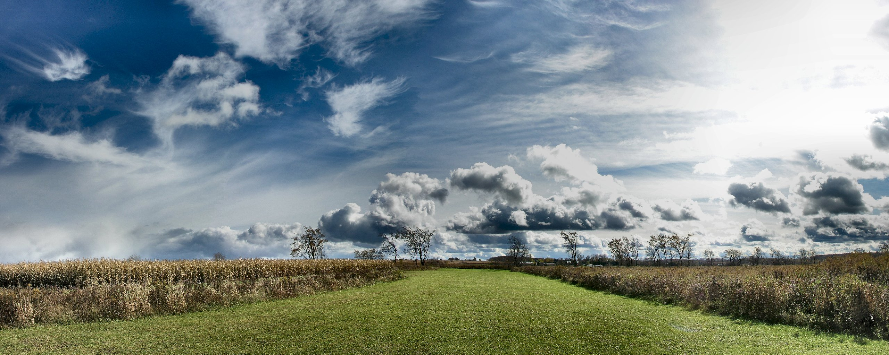

Decía John Steinbeck que no son las personas las que hacen los viajes, “sino los viajes los que hacen a las personas”. Los lectores de El Viajero lo han demostrado con los 1.806 relatos que han enviado para participar en el concurso Tu mejor viaje de verano. Desde León a los Andes, aventuras en las que no importa si el destino está a la vuelta de la esquina o en la otra punta del planeta. Los tres ganadores —Miguel Ángel González (primer premio), Cristina Cabrera (segundo premio) y Francisco de Paz (tercer premio)— nos llevan a una hoguera en pleno desierto de Kalahari, al cruce de pasos de cebra más vertiginoso de Tokio y al río Alberche, muy cerca de Madrid. Ahora les toca volver a viajar, con Logitravel, a las islas de Tahití, a París y a Toulouse, para vivir nuevas experiencias. En estas páginas recogemos diez relatos que se cuentan entre los más inspiradores de los recibidos. Entramos en San Isidoro de León para ver las fabulosas pinturas románicas o visitamos el glaciar argentino Perito Moreno, con su sobrecogedor acantilado de hielo milenario
Visit us
Otros